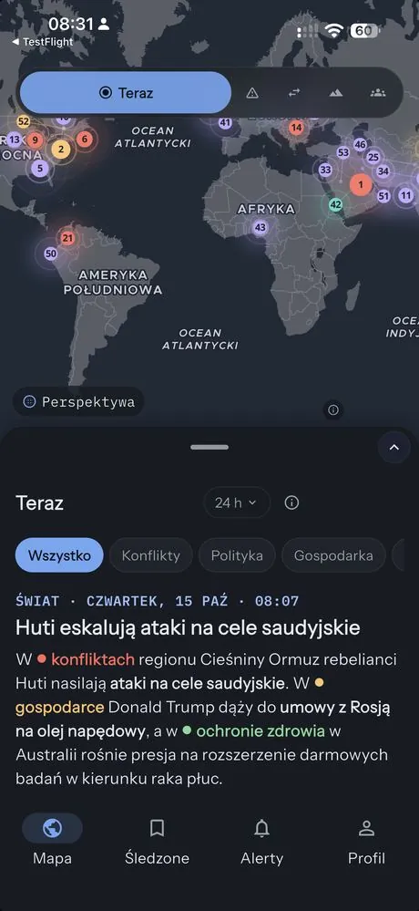
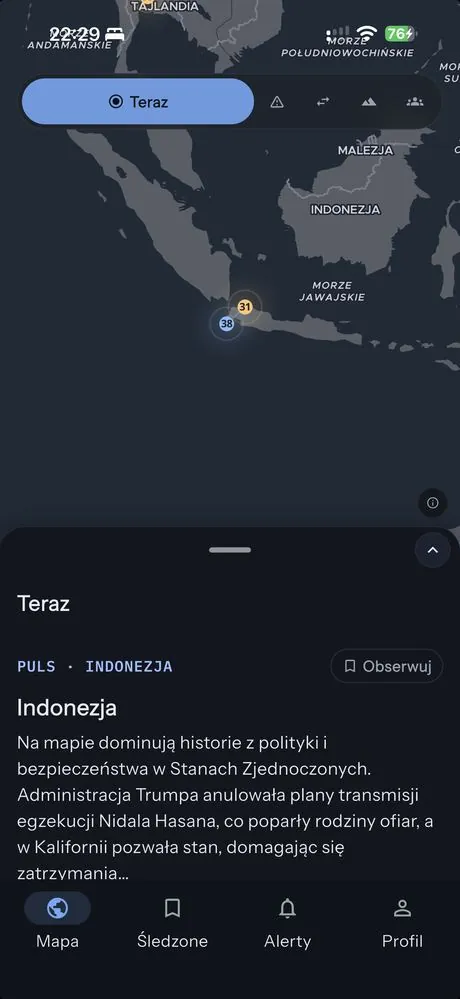
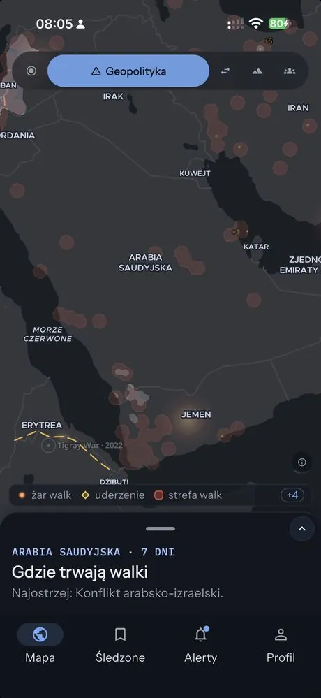
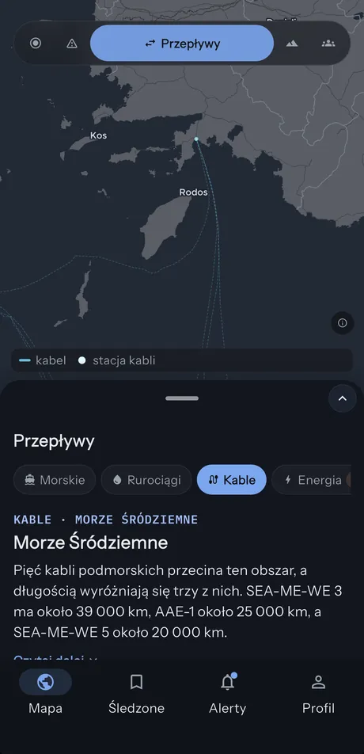
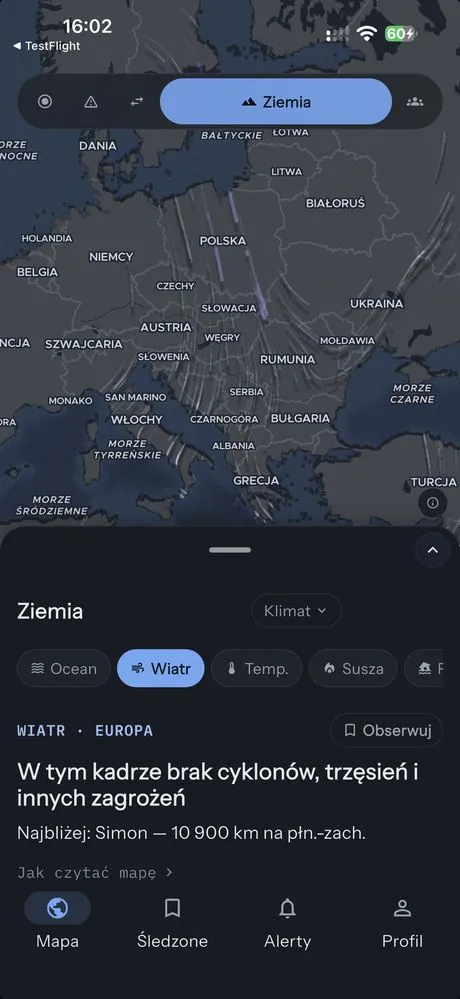
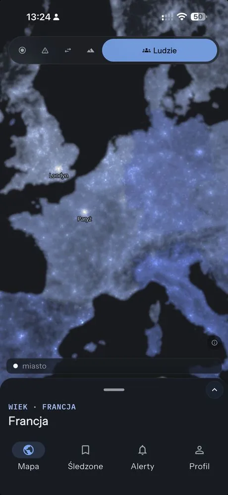

Посмотрите, что происходит сейчас.
Скоро вApp Store
Скоро вGoogle Play
Карта мира, которая показывает, что происходит, и в нескольких предложениях рассказывает о регионе на вашем экране. Конфликты, морские пути, штормы, люди. Всегда с источниками.
Бесплатно · iPhone и Android · 5 языков

Сдвиньте карту — и сводка изменится вместе с видом. Выберите линзу, чтобы увидеть мир с другой стороны.

Главные события последних часов — на своих местах на карте.

Где идут бои, что обостряется, кто с кем в союзе.

Суда, проливы, трубопроводы, кабели и электроэнергия, которая течёт между странами.

Землетрясения, циклоны, вулканы, пожары — в реальном времени, с ветром и течениями.

Население, города, миграция и ночные огни.
В 1990 году «Вояджер-1» с расстояния 6 миллиардов километров развернулся и сфотографировал Землю. Карл Саган назвал её бледно-голубой точкой — всё, что мы знаем, в одном пикселе.Отсюда и название. Нажмите на точку в приложении — и увидите её сами.
Видео: NASA/Goddard · NASA/JHU APL/Carnegie Institution of Washington. Фото: NASA/JPL-Caltech.
Pale Blue Dot объединяет научные данные и данные ведомств с новостями тысяч редакций. Короткие описания пишет ИИ — они всегда помечены и всегда со списком источников, которые можно проверить.
Мы не показываем рекламу и не продаём данные. Никому.
Карта работает без входа. Аккаунт нужен только для подписки на страны и сигналов.
Удалить аккаунт можно одной кнопкой в приложении или здесь. Политика конфиденциальности